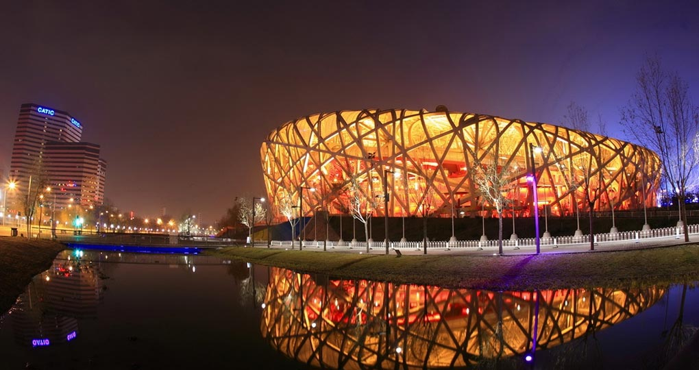

Tour in Beijing

Beijing, China’s sprawling capital, has history stretching back 3 millennia. Yet it’s known as much for modern architecture as its ancient sites such as the grand Forbidden City complex, the imperial palace during the Ming and Qing dynasties. Nearby, the massive Tiananmen Square pedestrian plaza is the site of Mao Zedong’s mausoleum and the National Museum of China, displaying a vast collection of cultural relics.
Must-See Attractions
-
Forbidden City & Tiananmen Square
The heart of imperial China, featuring a vast palace complex next to the world’s largest public square.
-
Great Wall of China
Hike famous sections such as Mutianyu, which is less crowded and offers toboggan rides, or Badaling, the most well-known section.
-
Summer Palace
A stunning imperial garden known for its beautiful lakes, pavilions, and classical Chinese landscaping.
-
Temple of Heaven
An architectural masterpiece where emperors once prayed for good harvests.
-
Olympic Park
Home to iconic modern landmarks including the “Bird’s Nest” National Stadium and the “Water Cube” aquatic center.
- Hutongs
Traditional narrow alleys that can be explored on foot, by bicycle, or by sidecar to experience local Beijing life.
Location
Tour in BeijingNo.33, East Chang'an Avenue, Dongcheng District
Beijing, China 100000
Call us at +86(10)65137766 to schedule a visit